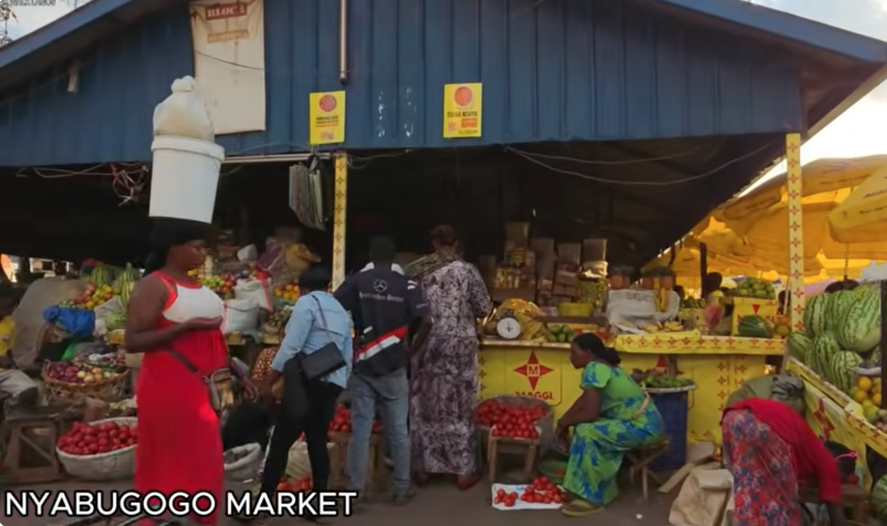

About Us
Our mission
We want more people to know, cook and enjoy African food. Tastes of Africa shares recipes, regional stories and the cultural meaning behind each dish, so this food heritage stays alive for the next generation.
A short history of African cuisine
African cooking grew out of thousands of years of farming, trade and migration. Grains like sorghum, millet and teff were grown here long before outside crops arrived. Trade routes across the Sahara and along the Indian Ocean coast brought spices and new techniques, and later crops such as maize, cassava, tomatoes and chili peppers became part of everyday meals.
African food also traveled with people. Ingredients like okra and black-eyed peas, and cooking ideas like one-pot rice, shaped kitchens across the Caribbean and the Americas, and today African chefs are bringing their own cuisines to restaurants around the world.
A cultural food landmark
Nyabugogo Vegetable Market in Kigali is where many families buy the fresh produce, cassava leaves, beans and spices behind Rwandan home cooking.
